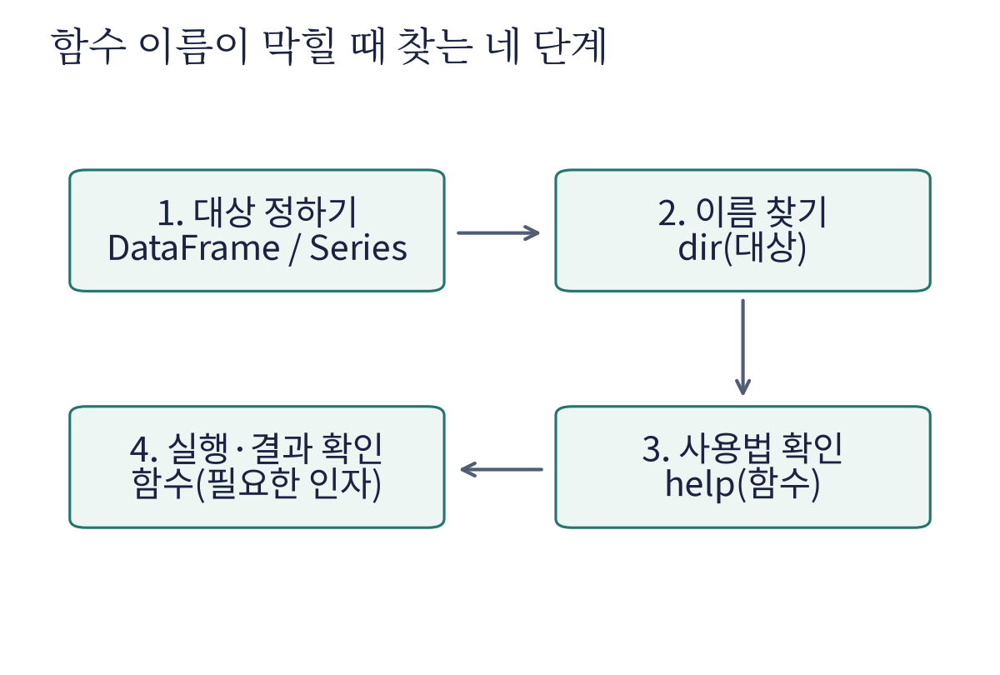
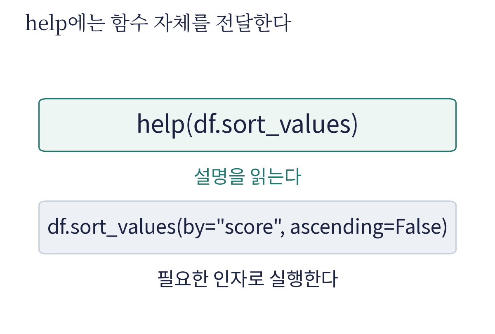

함수(Function) 이름과 인자(Argument)를 모두 기억하려면 부담이 큽니다. 필요한 기능이 어디에 있는지 좁힌 뒤 dir로 이름 후보를 찾고 help로 사용법을 읽는 순서를 연습해 보세요.
현재 공식 체험 페이지에 연결된 2025년 체험환경 가이드 1쪽은 자동완성 미제공과 help·dir 등을 이용한 참조 가능을 안내합니다. 이 문서를 제13회 환경의 별도 확정 공지로 해석하지는 않습니다. 아래 예제는 일반 Python 스크립트(Script)로 실행했으며, 시험에 설치되는 패키지(Package) 버전은 해당 회차 공지와 제공 환경에서 확인해야 합니다.
1. dir의 출발점은 검색할 대상입니다
dir은 객체(Object)의 속성(Attribute) 이름 후보를 보여 줍니다. 인자 없는 dir()는 현재 지역 스코프(Local Scope)의 이름 목록을 반환하므로 dir(df)와 구별합니다. 데이터프레임(DataFrame) 전체를 정렬하려면 df, 한 열의 빈도를 세려면 시리즈(Series), 평가 지표(Evaluation Metric)를 찾으려면 sklearn.metrics처럼 범위를 좁힙니다. 라이브러리(Library) 전체에서 무작정 찾는 것보다 필요한 역할에 가까운 대상을 먼저 고릅니다.
import pandas as pd
df = pd.DataFrame({'score': [78, 92, 85]})
print(dir(df))
print([name for name in dir(df) if name.startswith('sort')])
아래 코드를 선택한 뒤 Ctrl+C 또는 기기의 복사 메뉴를 사용하세요.
검증한 예제 결과 보기
['sort_index', 'sort_values']
본문 코드에서 출력되는 핵심 결과입니다. 도움말 전체 내용과 긴 이름 목록은 생략했습니다. 코드를 복사하거나 내려받아 자신의 Python 환경에서 확인하세요.
Python 스크립트에서는 dir(df)만 적으면 반환된 목록이 자동으로 표시되지 않습니다. print를 붙여 출력하세요. startswith는 이름의 앞부분이 sort인 후보만 남기는 문자열 검사입니다. 이 로컬 예에서는 sort_index와 sort_values가 보입니다. 이름에 정렬이 들어간다는 사실만으로 두 기능이 같아지는 것은 아니므로 다음 단계에서 설명을 읽습니다.
대상을 바꾸면 읽어야 할 사용법도 달라집니다. 예를 들어 표 전체의 df.sort_values는 기준 열을 by로 정하지만 한 열의 s.sort_values는 그 시리즈의 값을 정렬합니다. 이전에 외운 인자를 다른 대상에 그대로 넣기보다, 지금 다루는 것이 표인지 한 열인지부터 확인하세요.

2. help에는 함수·메서드 자체를 넘깁니다
함수(Function)나 메서드(Method)의 도움말을 볼 때는 실행 괄호를 붙이지 않습니다. help(df.sort_values)는 정렬 메서드 자체를 전달합니다. help(df.sort_values())는 안쪽의 정렬을 먼저 실행합니다. 이 예에서는 필수 인자 by가 없어 도움말에 도달하기 전에 TypeError가 납니다.
import pandas as pd
df = pd.DataFrame({'score': [78, 92, 85]})
help(df.sort_values)
아래 코드를 선택한 뒤 Ctrl+C 또는 기기의 복사 메뉴를 사용하세요.
검증한 예제 결과 보기
DataFrame.sort_values의 메서드 도움말이 출력됩니다. 정렬 메서드 자체를 전달한 정상 호출의 결과입니다.
본문 코드에서 출력되는 핵심 결과입니다. 도움말 전체 내용과 긴 이름 목록은 생략했습니다. 코드를 복사하거나 내려받아 자신의 Python 환경에서 확인하세요.
| 표현 | 이 예에서 일어나는 일 |
|---|---|
| help(df.sort_values) | 메서드의 사용법 확인 |
| help(df.sort_values()) | by 없이 먼저 실행하여 TypeError |
| help() | 입력을 기다리는 대화형 도움말 시작 |
이 글의 실행 예제에서는 인자가 없는 대화형 help()를 사용하지 않습니다.
공식 가이드에는 물음표 참조도 안내되어 있지만, df.sort_values? 같은 표현은 IPython의 확장 문법입니다. 일반 Python 스크립트에 그대로 붙이는 구문으로 생각하지 마세요. 여기서는 help(대상)처럼 Python에서 실행 가능한 표현으로 통일합니다.
3. 시그니처·Parameters·Returns를 나누어 읽습니다
도움말의 모든 문장을 읽기 전에 함수 시그니처(Function Signature)에서 필요한 입력과 기본값(Default Value)을 찾습니다. 이어 Parameters에서 매개변수(Parameter)의 뜻을 확인하고 Returns에서 반환값(Return Value)이 무엇인지 봅니다. sort_values에서는 정렬 기준 by, 정렬 방향 ascending, 반환값에 먼저 집중하면 됩니다.
| 읽을 부분 | 이 예에서 고를 값 | 이유 |
|---|---|---|
| by | 'score' | 점수 열로 정렬 |
| ascending | False | 큰 점수부터 내림차순 |
| Returns | 정렬 결과 DataFrame | 기본 inplace=False에서 결과를 받아 사용 |
원본을 바꾸는 inplace=True를 선택하면 반환값은 None이라는 점도 확인합니다.
import pandas as pd
df = pd.DataFrame({'score': [78, 92, 85]})
help(df.sort_values)
sorted_df = df.sort_values(by='score', ascending=False)
print(sorted_df['score'].tolist())
아래 코드를 선택한 뒤 Ctrl+C 또는 기기의 복사 메뉴를 사용하세요.
검증한 예제 결과 보기
[92, 85, 78]
본문 코드에서 출력되는 핵심 결과입니다. 도움말 전체 내용과 긴 이름 목록은 생략했습니다. 코드를 복사하거나 내려받아 자신의 Python 환경에서 확인하세요.
출력은 [92, 85, 78]입니다. 기본 설정에서는 반환값을 저장하거나 바로 이어 사용해야 정렬된 결과를 활용할 수 있습니다. 원래 df의 점수 순서는 [78, 92, 85]로 유지됩니다. 함수 이름만 찾고 반환값을 확인하지 않으면 정렬했다고 생각하면서 원본을 계속 사용하는 실수가 생길 수 있습니다.
ascending=True라는 기본값은 이 인자를 생략하면 오름차순을 적용한다는 뜻입니다. 내림차순이 필요하므로 False를 명시했습니다. 도움말에 나온 모든 옵션을 복사할 필요는 없습니다. 이번 요구에 필요한 인자를 고르고, 열 이름은 실제 자료의 열과 맞는지 확인합니다. 도움말은 현재 자료에 score 열이 있는지까지 대신 확인하지 않습니다.

4. value_counts의 기본값은 결측값을 제외합니다
한 열에서 값별 빈도를 구할 때는 Series의 value_counts를 확인합니다. 결측값(Missing Value)을 제외하는 dropna의 기본값은 True입니다. 빈도 합계가 원래 행 수와 다르면 함수가 실패했다고 판단하기 전에 기본값부터 살펴보세요.
import pandas as pd
s = pd.Series(['A', 'A', None, 'B'], dtype='object')
help(s.value_counts)
print(s.value_counts())
print(s.value_counts(dropna=False))
아래 코드를 선택한 뒤 Ctrl+C 또는 기기의 복사 메뉴를 사용하세요.
검증한 예제 결과 보기
A 2 B 1 Name: count, dtype: int64 A 2 None 1 B 1 Name: count, dtype: int64
본문 코드에서 출력되는 핵심 결과입니다. 도움말 전체 내용과 긴 이름 목록은 생략했습니다. 코드를 복사하거나 내려받아 자신의 Python 환경에서 확인하세요.
기본 결과는 A가 2개, B가 1개라 합계가 3입니다. dropna=False에서는 결측 1개를 포함해 합계가 4가 됩니다. 이는 결측을 다른 값으로 채우거나 삭제한 결과가 아닙니다. 같은 자료를 빈도표에 포함하는 방식만 바꿨습니다. 전체 자료의 누락을 확인할지, 관측된 범주만 비교할지에 맞춰 선택합니다.
결과의 길이와 빈도 합계도 구별합니다. 결측을 포함한 결과에는 A·B·결측이라는 세 항목이 있으므로 결과 길이는 3이지만, 각 항목의 빈도를 더하면 4입니다. 원자료의 행 수를 확인할 때는 빈도 값의 합계를 대조합니다. 항목 수를 원자료의 관측 수로 읽지 마세요.
5. 평가 지표는 metrics 안에서 찾아봅니다
회귀 평가에서 평균 절대 오차(MAE, Mean Absolute Error)가 필요하다면 sklearn.metrics 모듈(Module)로 범위를 좁힙니다. absolute가 포함된 이름을 찾은 뒤 mean_absolute_error의 설명을 확인합니다. 비슷한 이름의 중앙값 절대 오차나 백분율 오차를 같은 지표로 읽지 않습니다.
from sklearn import metrics
print([name for name in dir(metrics) if 'absolute' in name])
help(metrics.mean_absolute_error)
y_true = [3, 5, 7]
y_pred = [4, 5, 5]
print(metrics.mean_absolute_error(y_true, y_pred))
아래 코드를 선택한 뒤 Ctrl+C 또는 기기의 복사 메뉴를 사용하세요.
검증한 예제 결과 보기
1.0
본문 코드에서 출력되는 핵심 결과입니다. 도움말 전체 내용과 긴 이름 목록은 생략했습니다. 코드를 복사하거나 내려받아 자신의 Python 환경에서 확인하세요.
가중치 없이 하나의 목표변수를 평가하는 예입니다. 실제값과 예측값은 같은 관측의 순서로 맞춥니다.
출력은 1.0입니다. Parameters에서 y_true가 실제값, y_pred가 예측값인지 확인하고, Returns에서 오차 값이 반환되는지 확인합니다. 작은 수치로 손계산과 실행 결과를 맞춰 보면 지표를 잘못 찾거나 입력을 잘못 준비했는지 발견하기 쉽습니다.
두 입력의 길이가 같아도 같은 위치가 다른 관측이면 올바른 비교가 아닙니다. 실제값과 예측값을 같은 관측 순서로 준비하고, 평가하려는 목표변수와 단위도 확인합니다. 여기의 세 예측값은 계산 설명용으로 정한 값이며, 어떤 모형을 학습해 얻은 성능 결과가 아닙니다.
6. 통계 함수는 자료 조건과 검정 방향부터 정합니다
scipy.stats에서 ttest로 시작하는 후보를 찾을 수 있어도 어떤 검정을 쓸지는 자료가 결정합니다. 같은 대상 5명의 이전·이후 측정이라면 대응표본 t검정(Paired-sample t-test)을 검토합니다. 대상 순서를 맞추고, 대응쌍 사이의 독립성(Independence)과 대응차 분포의 정규성(Normality)을 가정한 교육 예제입니다. 다섯 값만으로 가정이 검증되었다는 뜻은 아닙니다.
from scipy import stats
before = [7, 9, 6, 8, 10]
after = [8, 12, 8, 9, 12]
print([name for name in dir(stats) if name.startswith('ttest')])
help(stats.ttest_rel)
result = stats.ttest_rel(after, before, alternative='greater')
print(result.statistic, result.pvalue)
아래 코드를 선택한 뒤 Ctrl+C 또는 기기의 복사 메뉴를 사용하세요.
검증한 예제 결과 보기
4.810702354423639 0.00429045936096239
본문 코드에서 출력되는 핵심 결과입니다. 도움말 전체 내용과 긴 이름 목록은 생략했습니다. 코드를 복사하거나 내려받아 자신의 Python 환경에서 확인하세요.
이 예는 단측 검정(One-sided Test)입니다. 대립가설(Alternative Hypothesis)은 계산 전에 정한 ‘이후−이전의 모집단 평균이 0보다 크다’입니다. ttest_rel에서 greater는 첫 번째 입력의 평균이 두 번째보다 크다는 방향이므로 after를 앞에 둡니다. 입력 순서를 뒤집고 greater를 유지하면 다른 방향의 검정이 됩니다. p값(p-value)을 확인한 뒤 유리한 방향으로 바꾸지 않습니다.
대응 관계는 두 배열의 길이가 같다는 사실만으로 생기지 않습니다. 같은 대상의 두 측정값이 같은 위치에 있어야 합니다. 각 배열을 점수 크기순으로 따로 정렬하면 원래 대상 사이의 연결이 깨질 수 있습니다. 결측이 있다면 어느 대상의 쌍을 어떻게 처리했는지도 함께 기록해야 합니다.
| 확인 항목 | 이 예의 값 |
|---|---|
| 이후−이전의 대응차 | 1, 3, 2, 1, 2 |
| 대응차 평균 | 1.8 |
| 검정통계량·자유도 | t ≈ 4.81070, df = 4 |
| 단측 p값 | 약 0.00429046 |
가정한 대응 설계와 사전에 정한 방향 아래의 자체 계산 예입니다.
help는 입력 인자와 반환 속성의 뜻을 확인하는 도구이며, 표본의 독립성이나 분석 설계를 대신 판단하지 않습니다. result.statistic은 검정통계량(Test Statistic), result.pvalue는 지정한 대립가설에 대한 p값(p-value)입니다. 값을 출력했다고 분석 조건까지 자동으로 맞아지는 것은 아닙니다.
시험 전에는 같은 확인 순서로 직접 실행하세요
- 대상을 고릅니다: 표는 df, 한 열은 s, 평가 지표는 metrics, 통계 함수는 stats.
- dir로 후보를 좁힌 뒤 help에 함수·메서드 자체를 전달합니다.
- 필요한 인자와 기본값·반환값을 확인하고 작은 자료로 실행합니다.
- 결과와 문제의 요구를 대조한 뒤 불필요한 도움말 출력은 정리합니다.
처음 연습할 때는 정렬 후보 찾기, 도움말 열기, 필요한 인자로 정렬하기 세 예제를 이어서 실행해 보세요. 다음에 결측 포함 빈도, MAE, 대응 검정으로 범위를 넓힙니다. 찾는 순서가 익숙해지면 기억이 흐릿한 인자를 확인할 수 있습니다. 실제 답안의 파일·열 이름과 제출 형식은 해당 문제 지시를 따릅니다.
핵심만 다시 보기
- 일반 Python 스크립트에서 dir 결과를 보려면 print를 사용하고 대상 객체의 범위를 먼저 좁힙니다.
- help에는 함수·메서드 자체를 전달하며 필요한 인자·기본값·반환값을 읽습니다.
- 기본값을 바꾸면 포함되는 자료가 달라질 수 있으므로 작은 예제로 결과를 확인합니다.
- 통계 검정의 자료 조건과 가설 방향은 도움말 검색 전에 정하고 입력 순서까지 대조합니다.
확인 문제
원리를 확인하기 위해 새로 만든 교육용 문항입니다. 먼저 답을 생각한 뒤 해설을 열어 보세요.
문제 1
일반 Python 스크립트에서 DataFrame의 sort_values 사용법을 먼저 확인하려 한다. 가장 적절한 표현은?
- df는 score 열을 가진 pandas DataFrame이다.
- 지금은 정렬을 실행하지 않고 메서드의 도움말을 보려 한다.
help(df.sort_values())help(df.sort_values)help()df.sort_values?
정답·해설 보기
정답: 2번
help(df.sort_values)는 메서드 객체 자체를 전달하여 사용법을 보여 준다. 메서드 이름 뒤에 실행 괄호를 붙이면 도움말 호출보다 먼저 정렬이 실행된다.
다른 보기가 맞지 않는 이유
- sort_values를 by 없이 먼저 실행하므로 이 조건에서는 TypeError가 난다.
- 인자가 없는 help는 대화형 도움말을 시작하며 해당 메서드 설명을 직접 요청한 표현이 아니다.
- 물음표 구문은 IPython 확장 기능이며 일반 Python 스크립트 구문이 아니다.
문제 2
같은 대상의 이후−이전 평균차가 0보다 큰지 검정하려 한다. 조건에 맞는 호출은?
- before=[7,9,6,8,10], after=[8,12,8,9,12]이며 같은 위치는 같은 대상이다.
- 대응쌍은 서로 독립이고 대응차는 정규분포를 따른다고 가정한다.
- 계산 전에 대립가설을 모집단 평균(after-before)>0으로 정했다.
- from scipy import stats를 실행한 상태이다.
stats.ttest_rel(before, after, alternative='greater')stats.ttest_ind(after, before, alternative='greater')stats.ttest_rel(after, before, alternative='two-sided')stats.ttest_rel(after, before, alternative='greater')
정답·해설 보기
정답: 4번
대응 자료이므로 ttest_rel을 사용한다. greater는 첫 번째 입력의 평균이 두 번째보다 크다는 방향이므로 after, before 순서로 전달한다. 이 조건에서 t≈4.81070, 자유도 4, 단측 p≈0.00429046이다.
다른 보기가 맞지 않는 이유
- 첫 번째 입력이 before이므로 이전−이후의 모집단 평균이 양수라는 반대 방향을 검정한다.
- ttest_ind는 독립된 두 표본을 위한 함수로, 주어진 동일 대상의 대응 설계를 반영하지 않는다.
- 양측 대립가설은 평균차가 0과 다른지를 묻는다. 사전에 정한 평균차>0이라는 단측 방향과 일치하지 않는다.
예제 파일 내려받기
본문의 코드 6개를 각각 독립 실행할 수 있는 Python 파일로 제공합니다. 파일을 내려받아 자신의 연습 환경에서 실행하세요.
예제는 한 상세 글에 포함되어 있습니다. 필요한 pandas·SciPy·scikit-learn은 실행 환경에 준비되어 있어야 합니다.
원문 근거와 공식 안내
시험 환경과 설치 버전은 응시 회차의 공식 안내에서 확인하세요.
- 2026년 빅데이터분석기사 검정일정 ↗ · 국가데이터처
- 빅데이터분석기사 실기 체험환경 안내 ↗ · DataQ 실기 체험환경
- 빅데이터분석기사 실기 체험환경 가이드(250605) ↗ · K-DATA
- Python 3.13 Built-in Functions: dir, help ↗ · Python Software Foundation
- pandas 2.3 DataFrame.sort_values ↗ · pandas
- pandas 2.3 Series.value_counts ↗ · pandas
- mean_absolute_error ↗ · scikit-learn
- scipy.stats.ttest_rel ↗ · SciPy
- Python vs IPython ↗ · IPython
- pandas 2.3 Series.sort_values ↗ · pandas